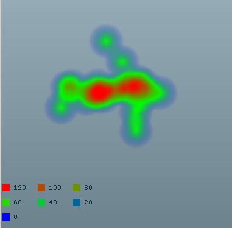

A legend can be connected to any heat map component.
It can be filled automatically if the heat map control has a
colorModel property and a
values property. In this case, a legend
item will be created for each value found in the
values property with the corresponding color found in the color model.
To connect the
HeatMapLegend component to the heat map control, set the heat
map control as the
dataProvider property of the legend. Note
that you can also provide an array of
LegendItem objects as the data provider of the legend if you prefer building
your legend items by hand.
The following example shows how to attach a legend to
a DensityHeatMap component that has
a color model.
<?xml version="1.0" encoding="utf-8"?>
<mx:Application xmlns:mx="http://www.adobe.com/2006/mxml"
xmlns:ilog="http://www.ilog.com/2007/ilog/flex"
layout="absolute">
<ilog:DensityHeatMap width="400" height="300" id="heatMap" >
<ilog:dataProvider>
<mx:XMLList>
<point x="179.8" y="148.5" /><point x="108.0" y="144.1" />
<point x="221.2" y="184.2" /><point x="235.8" y="141.5" />
<point x="198.0" y="145.4" /><point x="99.5" y="177.6" />
<point x="225.3" y="134.1" /><point x="160.1" y="158.7" />
<point x="118.3" y="142.3" /><point x="262.6" y="152.9" />
<point x="173.4" y="68.2" /> <point x="235.3" y="159.1" />
<point x="169.6" y="158.8" /><point x="159.7" y="140.9" />
<point x="222.7" y="215.1" /><point x="154.2" y="150.5" />
<point x="203.9" y="148.0" /><point x="140.0" y="163.6" />
<point x="216.0" y="141.2" /><point x="199.2" y="102.3" />
</mx:XMLList>
</ilog:dataProvider>
<ilog:colorModel >
<ilog:ColorModel>
<ilog:ColorEntry color="0x0000ff" limit="0" alpha="0"/>
<ilog:ColorEntry color="0x00ff00" limit="50" />
<ilog:ColorEntry color="0xff0000" limit="120" />
</ilog:ColorModel>
</ilog:colorModel>
</ilog:DensityHeatMap>
<ilog:HeatMapLegend y="{heatMap.y + heatMap.height}" dataProvider="{heatMap}" >
<ilog:values>
<mx:Number>120</mx:Number>
<mx:Number>100</mx:Number>
<mx:Number>80</mx:Number>
<mx:Number>60</mx:Number>
<mx:Number>40</mx:Number>
<mx:Number>20</mx:Number>
<mx:Number>0</mx:Number>
</ilog:values>
</ilog:HeatMapLegend>
</mx:Application>
The following figure shows the resulting DensityHeatMap object with legend.
